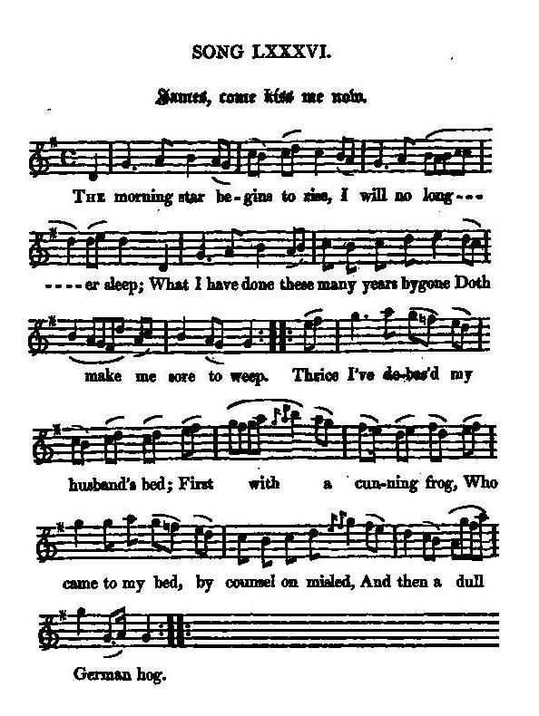

James, come kiss me now
Jacques, un baiser!
A Call to the Chevalier de Saint-George
Tune - Mélodie"James, come kiss me now" (an old psalm)
from Hoggg's "Jacobite Reliques" , volume II, N°86, 1821
Sequenced by Christian Souchon

|
To the tune
"I Preserved this song solely on account of the antiquity of the tune to which it is composed. There is not a more ancient one known of. In the "days o' langsyne" it was highly popular as a psalm-tune." Hogg in "Jacobite Songs", 1819. |
A propos de la mélodie
"J'ai conservé ce chant dans la collection uniquement en raison de l'ancienneté de la mélodie sur laquelle le texte a été composé. Au "temps jadis" , c'était un psaume fort connu." Hogg in "Jacobite Songs", 1819. |

|
JAMES, COME KISS ME NOW
1. The morning star begins to rise, I will no longer sleep; What I have done these many years bygone Doth make me sore to weep. Thrice [1] I've debas'd my husband's bed; First with a cunning frog, [2] Who came to my bed, by counsel on misled, And then a dull German hog. 2. Frail creature I, thus to have been Cheated out of my sense By treacherous men, who forc'd me, to my shame, To hurry my husband hence. They taught me that the breach of vows Was not a sin at all; To keep up the laws of religion, the old cause, When likely they were to fall. [3] 3. A wretched creature, I then learn'd A lesson that was odd ; To break Jesus' laws, the only way then was To keep the laws of God. [4] But sad experience has me taught A lesson that's more true; He's justly condemn'd, who, for a godly end, Breaks through a solemn vow. 4. Great James, come kiss me now, now, Great James, come kiss me now: Too long I've undone myself these years bygone, By basely forsaking you. Come home again, great James, great James, Come home again, I pray: Forgive me the crime; ever after I'll be thine. I call thee; do not stay. Source: "The Jacobite Relics of Scotland, being the Songs, Airs and Legends of the Adherents to the House of Stuart" collected by James Hogg, published in Edinburgh by William Blackwood in 1819. |
JACQUES, UN BAISER
1. L'étoile du matin qui commence à poindre A mis fin à cette longue nuit sans sommeil. Ce que j'ai fait de ces ans qu'on vit s'éteindre Est cause de mon chagrin, à nul autre pareil. Par trois fois, [1] j'ai profané la couche conjugale, Tout d'abord avec un matois et malicieux crapaud [2] Pour lequel j'ouvris mon lit, égarée par une cabale, Ensuite avec un pourceau germanique falot. 2. Frêle créature, ainsi m'a-t-on trompée, Ainsi fus-je détournée des voies du bon sens, Et, par des hommes perfides subornée, Fus-je contrainte de tromper un époux aimant. Il m'ont tous représenté que ce vil adultère Ne saurait, au grand jamais, être compté pour péché. Qui violerait les lois d'une religion vieille et austère Dont on peut croire qu'elle appartient au passé? [3] 3. On m'enseigna, misérable créature, Un précepte, pour le moins, des plus curieux: Bafouer les lois du Christ serait la plus sûre Façon de se conformer à celles de Dieu. [4] Mais par l'expérience je fus autrement instruite, Et cette leçon est plus juste que les autres, je crois: Celui-là recevra la condamnation qu'il mérite Qui se parjure en se prévalant de la foi. 4. Grand Jacques, ce n'est pas à titre posthume, O Jacques, que tu dois me donner un baiser. Depuis tant d'années, vois-tu, je me consume, Honteuse de t'avoir lâchement abandonné. Reviens donc, Grand Jacques, reprendre la vie commune! Reviens donc, reviens, c'est ton épouse qui t'en supplie. Et pardonne-lui sa faute; elle n'en fera plus aucune. Vois, je t'implore. Ne tarde plus, je te prie. (Trad. Christian Souchon(c)2010) |
|
[1]
Thrice
: is maybe inclusive of KIng George II who was crowned in 1727.
[2] Frog : William of Orange. ["frog" is] "a derogatory term for "Frenchman," since 1778 (short for frog-eater), but before that (1652) it meant "Dutch" (from "frog-land" [see England's New Psalm , note 7] "marshy land"). (Online Etymology Dictionary) [3] Religion : King James II was overthrown chiefly because he was of Catholic persuasion. [4] Jesus'laws, laws of God : Unlike Protestants, Catholics insist on the New Testament's pre-eminence over the Old one. |
[1]
Trois fois
: y compris, peut-être, Georges II, couronné en 1727.
[2] Crapaud : (en anglais "frog"), désigne Guillaume d'Orange. ["frog" est] "un terme désobligeant qui désigne un "Français," à partir de 1778 (abréviation de "mangeur de grenouilles), mais auparavant (1652) il signifiait "Hollandais" ( "pays de grenouilles" [cf. Nouveau Psaume pour l'Angleterre , note 7], "marécageux"). (Online Etymology Dictionary) [3] Religion : le roi Jacques II fut renversé, principalement parce qu'il était de confession catholique. [4] Lois du Christ, lois de Dieu : La religion catholique à la différence de le protestante, insiste sur la prééminence du Nouveau testament par rapport à l'Ancien. |
|
|
|